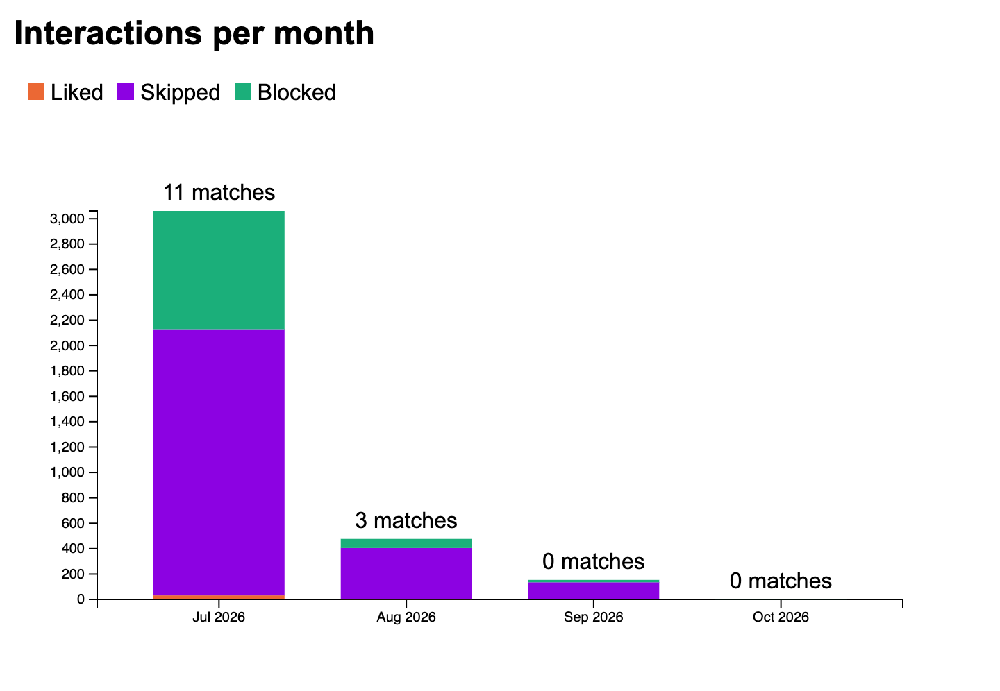
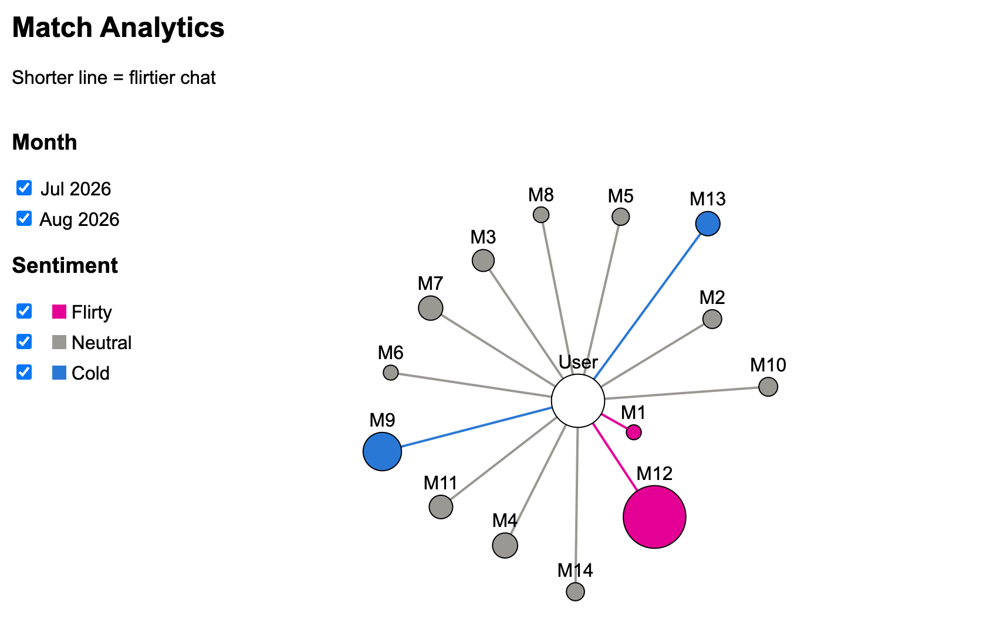
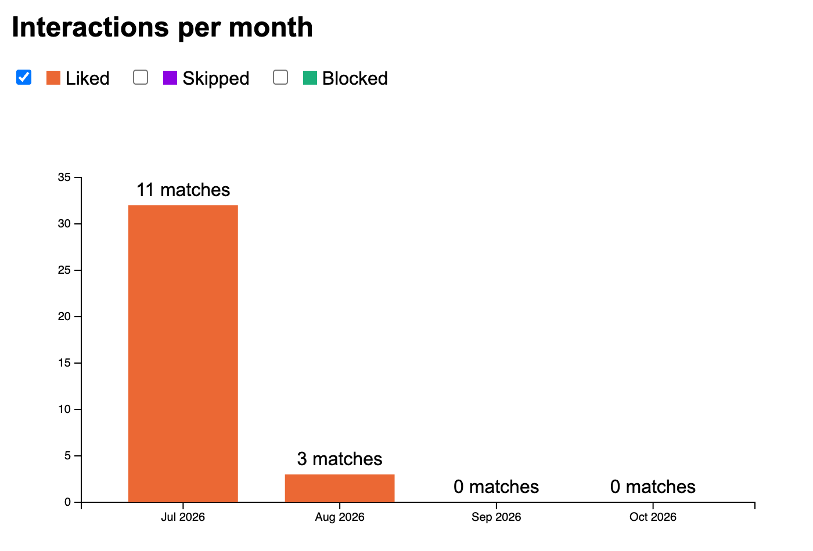
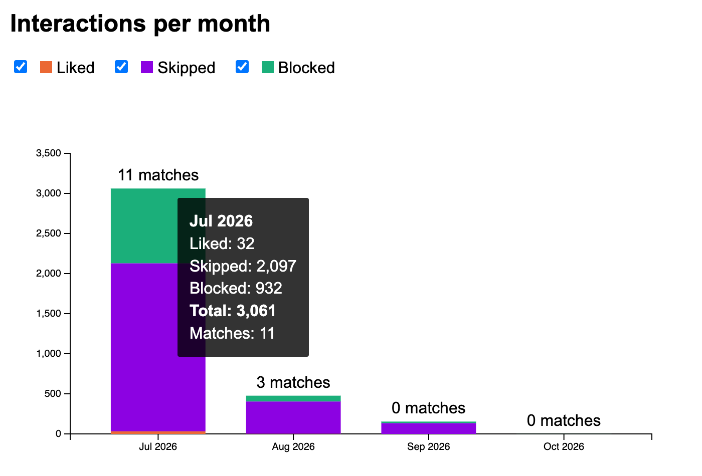
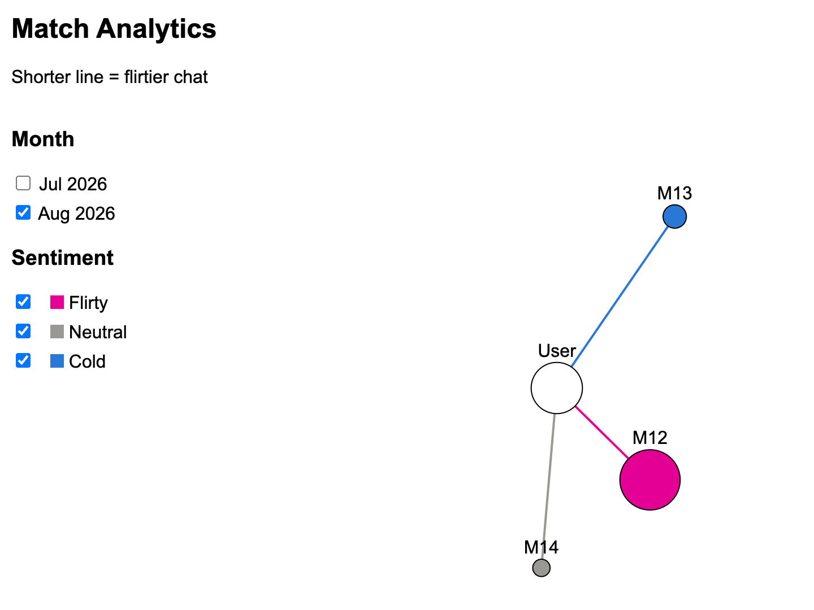

Overview and Motivation
We wanted something fun, practical, and personal that people are likely to use for themselves. This allows us to do simple numerical data analysis and also offers an opportunity to explore other areas like sentiment analysis (for messages with matches). Since Caitlin has been personally exploring the love scene around the city, she’s kindly agreed to examine her Hinge data for this project and gain personal dating insights – two birds with one stone, if you will.
Related Work
We tend to spend so much time on phone apps that receiving data-driven summaries from them about our lives has become both a common self-reflection / self-analytics practice and a source of entertainment for many. Some of the most well-known examples of this are Spotify Wrapped, Health trends on Apple devices, Google Photos yearly summaries. Speaking from our personal experiences, many people in our circles also spend a lot of time on dating apps like Hinge, which interestingly does not provide any data-driven summaries to its users. Since insights into one's dating preferences can be both entertaining and informative for romantic self-awareness, we thought it'd be great to develop visualizations for trends akin to those provided by apps such as Spotify or Apple Health. Though we quickly realized that the data provided by Hinge is not as rich as that provided by Spotify or Apple Health, we still thought it would be fun to explore the data and see what insights we could glean from it.
Class inspirations: When considering our design alternatives (see Design Evolution sectin below), we were also inspired by our in-class debate on pie charts vs bar charts. Despite being team pie-chart in the class debate, we ultimately decided to use a bar chart instead for our current visualization of the types of interactions over time. We were also inspired by the D3 Force-Directed layouts introduced in Studio 7, particularly the graph-focused approaches to represent interpersonal relationships with nodes and links. We thought a graph with a central node (the user) connected to other nodes (matches) would be a great way to visualize the data, which also allows for further use of visual properties for nodes and links to represent different aspects of the relationships.
Questions
As we were exploring the raw data available from the Hinge app, we first formulated some basic questions:
- How many likes did Caitlin send and receive?
- Among the likes sent/received, how many resulted in matches?
- What did Caitlin's activity look like over time? Did she have more activity in certain months than others?
- Did her activity taper down over time or was it consistent?
We quickly realized that the data available from Hinge was entirely anonymized, and primarily included interactions on Caitlin's side. That is, the data included no information about the matches themselves, and no information about the messages sent by the matches. However, the data include information about all the messages sent by Caitlin to her matches, along with timestamps and grouped by anonymized match IDs. With a large availability of sentiment analysis tools, we realized that we could analyze the messages sent by Caitlin to her matches to determine the sentiment of those connections. This led us to formulate additional questions:
- What were the sentiments of Caitlin's messages to her various matches?
- Did she have more positive or negative interactions with her matches, or mostly neutral?
- For any given match, how did the sentiment of Caitlin's messages to that match evolve over time? Did it get more positive or negative, or stay the same?
- Does the number of messages Caitlin sent to a match relate to the sentiment of that conversation?
Data
The Hinge dating app allows users to export their data. We will be using data from Caitlin's Hinge profile that includes the following anonymized artifacts of interest:
- Messages sent to matches (timestamped, also includes text and match ID)
- Likes sent (timestamped)
- Blocks sent (timestamped)
- Profiles skipped (timestamped)
Exploratory Data Analysis
We started by skimming through the data to get a sense of its structure and content, first counting up the number of likes sent, profiles skipped, and profiles blocked. Since the project proposal included a section on design alternatives, we actually settled on a stacked bar chart before visualizing our actual data. The stacked bar chart was the first view of our data, visualized. It immediately revealed an important insight that the number of likes sent was dwarfed by the number of skips and blocks (picky user, what can we say [shrugs]). Therefore, one change that this realization inspired is to be able to filter the types of interactions and rescale the bar chart accordingly.

The match analysis with radial graph chart was also one of the first looks at the data. We were pretty satisfied with how neat this visualization turned out right away: there weren't too few or too many matches so the visualization did not feel under-/overwhelming. The distances between the central node (user) and the matches showed the continuous spectrum of cold-to-flirty chat, while the blue-grey-pink color scheme clearly indicated the cold, neutral, and flirty match categories as a second encoding of the same sentiment. Furthermore, it was also interesting to note that the number of messages for each match, represented by the size of the node in the graph, did not clearly correlate with the sentiment on that match: M1 is a tiny pink node, and M9 is relatively large but blue.

Design Evolution
We initially considered several approaches to visualize hinge's numerical data. The first option emphasized the growth over time of different types of interactions, while the second emphasized how types of interactions are distributed by month. The third provided a mixture of the first two, and may be preferred over the others for several reasons: 1) actual numbers are explicitly labeled, and do not require the viewer to make numerical estimations by eye, 2) the proportion of interactions by month can be interpreted like in the pie chart, but with the added benefit of knowing the actual numbers, 3) it allows us to easily see which months the user was most active, rather than needing to interpret the slopes of the lines in the line chart, and 4) we can add a direct interaction for the user to click on the liked profiles bar in each month and transition to another page where the matches received in that month are listed, which would make the visualizations even more interactive.

Option one: shows the growth of interactions over time. The user must interpret the slopes to figure out which months had more interactions.

Option two: shows the proportion of interactions by month. The user cannot know the exact number of interactions in each month, nor how the types of interactions compare with one another.

Option three: shows the number of interactions in each month and separates by type. Exact numbers are displayed and the user can directly infer which months had more activity.
We also considered several approaches to visualize hinge's sentiment data. The first option allows the user to filter which measure is shown, where the measure is encoded by line weight. Matches are individually colored. The second option shows all measure encodings at once, but might be visually straining for the user to look at. The third also shows all measure encodings at once, but chooses arguably more intuitive encodings which might alleviate problems from the second option (group sentiment by color, and match IDs closer to the center have had more interactions with the user).

Option 1: allows the user to filter which measure is shown, where the measure is encoded by line weight. Matches are individually colored. Note that if a user has many matches, some nodes might repeat colors despite belonging to different match IDs.

Option 2: No filtering used. Encodes two measures simultaneously: number of messages sent to a match and type of sentiment of those messages. This could be visually straining for the user to look at, despite allowing the user to compare measures immediately without using a dropdown. Once again, matches have different colors.

Option 3: No filtering used. Encodes two measures simultaneously: number of messages sent to a match and type of sentiment of those messages. Chooses encodings to alleviate visual strain while allowing the user to compare measures immediately without using a dropdown. Nodes are colored by sentiment instead of Match ID, so repeated colors serve a purpose and do not mislead the user into thinking two nodes have the same Match ID.
Combination: We can combine the two third options above in a way that lets the user click on areas of the bar chart to see match analytics automatically filtered by month. Adding filters to the sentiment analysis chart lets the user immediately see the overall analysis (which matches had good vs bad sentiment, which matches had the most interaction), while offering a method to filter based on what the user wants to see.

Users could also interact with the connection graph to see individual match reports by clicking on a node in the chart. This could show which words in the messages contributed to certain sentiments, as well as how a “sentiment score” developed over time. This would add transparency of how sentiment scores were determined and provide a sense of how a connection grew or got worse as the conversation progressed. A page visualizing information about a match might look like the visualization below:

*The above shows two visualizations: the first shows how the sentiment score for a match developed over time, and the second shows which words contributed the most to the current sentiment score.
Implementation
In order to answer the questions we posed for this project, we went with the stacked bar chart view to simultaneously view likes sent, profiles skipped, and profiles blocked/rejected. We encoded each bar to represent one month of activity to see temporal trends of Caitlin's engagement with the app. We further implemented the interactive filtering to not just show total activity, but also to focus in on only (1) likes sent, (2) profiles skipped, (3) profiles blocked. We also added a tooltip to the stacked bar chart: hovering over any bar shows that month's count for each selected interaction type, their total, and the number of matches. To answer questions regarding the sentiment for each of the matches, we analyzed Caitlin's messages sent to matches and calculated a sentiment score (each message gets +1 for every flirty word or emoji it contains and −1 for every cold one, and a match's score is the average across all messages sent to that match), which we further encoded into three distinct categories with thresholds (Flirty for an average score of 0.25 or above, Cold for −0.05 or below, and Neutral in between). This is a preliminary approach to sentiment analysis, designed by Caitlin in line with her own knowledge of her chats and conversations. Considering our design alternatives, we decided to encode the sentiment both continuously and categorically using the graph chart with Caitlin being the central node and with matches being connected radially. We also visualized the number of messages with the node size. Combined, this visualization would let us clearly see both the sentiment for each match, as well as the overall distribution of sentiments across matches. We also included month filtering to visualize the same data for any one given month.



Evaluation
As mentioned in the "Exploratory Data Analysis", our visualizations clearly revealed some interesting patterns of Caitlin's activity on Hinge. The non-filtered view of the stacked bar chart shows a few immediate insights that answer most of our questions posed:
- Caitlin sends far fewer likes than profiles she skips or likes that she receives and rejects (blocks). In fact, Caitlin did not send any likes since September 2026.
- Caitlin's activity was by far the highest in July and tapered down since then. Perhaps she got busy with the start of the semester, or maybe she's pursuing an interesting match. Maybe she's juggling both?
- We cannot deduce from the data an answer to the question "Among the likes sent/received, how many resulted in matches?" We can only deduce the total number of matches resulting from the combined number of likes sent (shown) and received (not shown).
The second visualization on sentiment analysis also reveals some clear patterns in response to the sentiment-focused questions:
- The majority of Caitlin's matches (10/14) showed a neutral sentiment, only 2 were categorized as flirty, and 2 more as cold. These data tell us that Caitlin's sentiments with her matches are mostly neutral, with a few matches at each extreme.
- We also realized that, though the sample size is still small, there was no clear association between the number of messages sent and the sentiment category. In particular, match #1 is flirty, but also has one of the smallest number of messages; match #9 has a lot of texts sent, but it is categorized as cold. Match #12 has both an extensive message history and is also flirty. Most of the neutral matches however have relatively small node sizes, indicating few messages sent.
Things that work well in our visualizations: The filter for the bar chart expands the squashed "likes sent" category into a clearer focused view, letting the user see the patterns clearly for that category only. The tooltip on the stacked bar chart, added after our exploratory data analysis, shows the exact counts and total for each month, so the user no longer has to estimate numbers from the bar heights. The double encoding of sentiment in both continuous and categorical forms provides a more comprehensive and intuitive view of interactions with each match.
Limitations:
- The word lists are currently sparse, but this is only a preliminary sentiment analysis.
- Only Caitlin's messages are available. This is a limitation on Hinge's side, since the data is completely anonymized and matches' messages are not exportable.